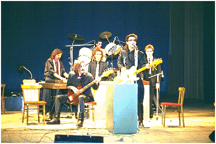
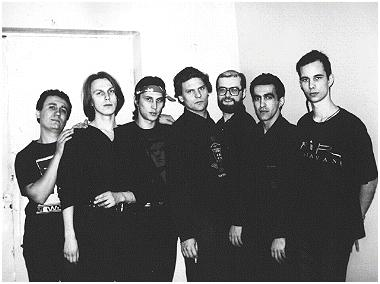
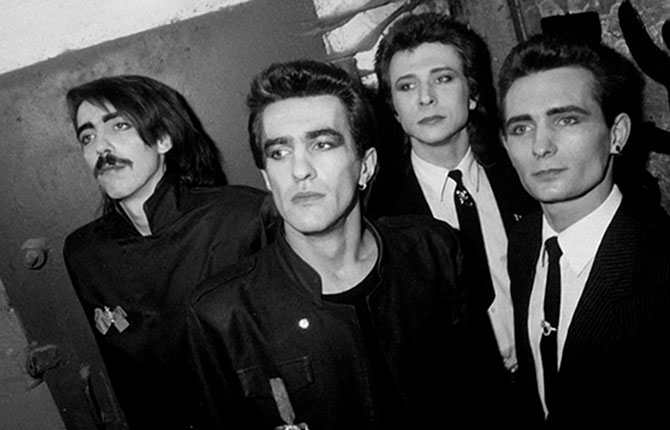

Nautilus Pompilius («Наути́лус Помпи́лиус») — советская и российская рок-группа, одна из наиболее известных во второй половине 1980-х и в середине 1990-х годов. Основана в Свердловске в 1982 году студентами Свердловского архитектурного института Вячеславом Бутусовым и Дмитрием Умецким. Дебютный альбом «Переезд» был записан в 1983 году.
|  |  |  |
Состав коллектива неоднократно менялся. Изменениям подвергался также и музыкальный стиль группы. Так, в начальном периоде «Наутилус» играл хард-рок, а во время популярности коллектива в середине 1980-х годов основным жанром являлась новая волна ; также творчество группы пересекается со многими направлениями рок-музыки — альтернативный рок, постпанк, готик-рок, арт-рок, симфо-рок, глэм-рок, инди-рок, фолк-рок.